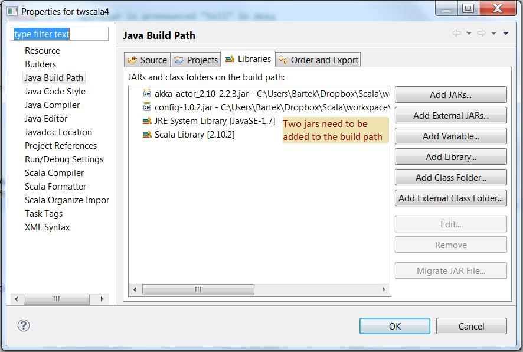

Konfiguracja Eclipse
Aby uruchomic projekt korzystajacy z aktorow Akki z eclipse, konieczne jest dolaczanie dwoch paczek JAR do sciezki Java Build Path, jak rowniez odpowiednie zdefiniowanie konfiguracji uruchomienia (Run Configuration), ktora musi byc typu "Java Application"!
